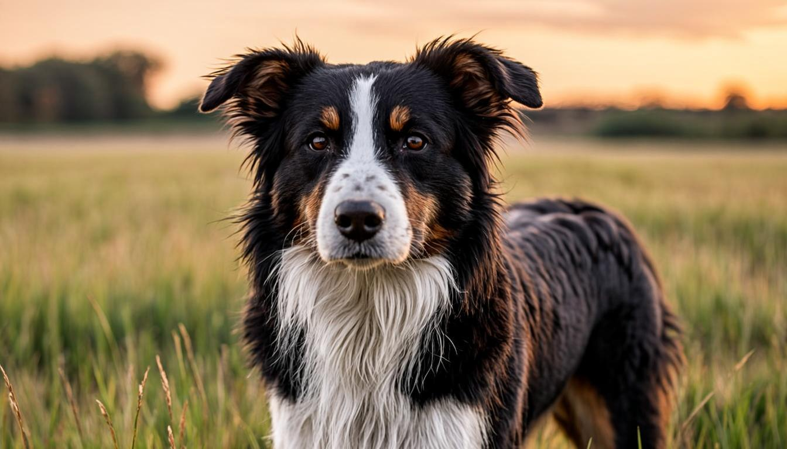
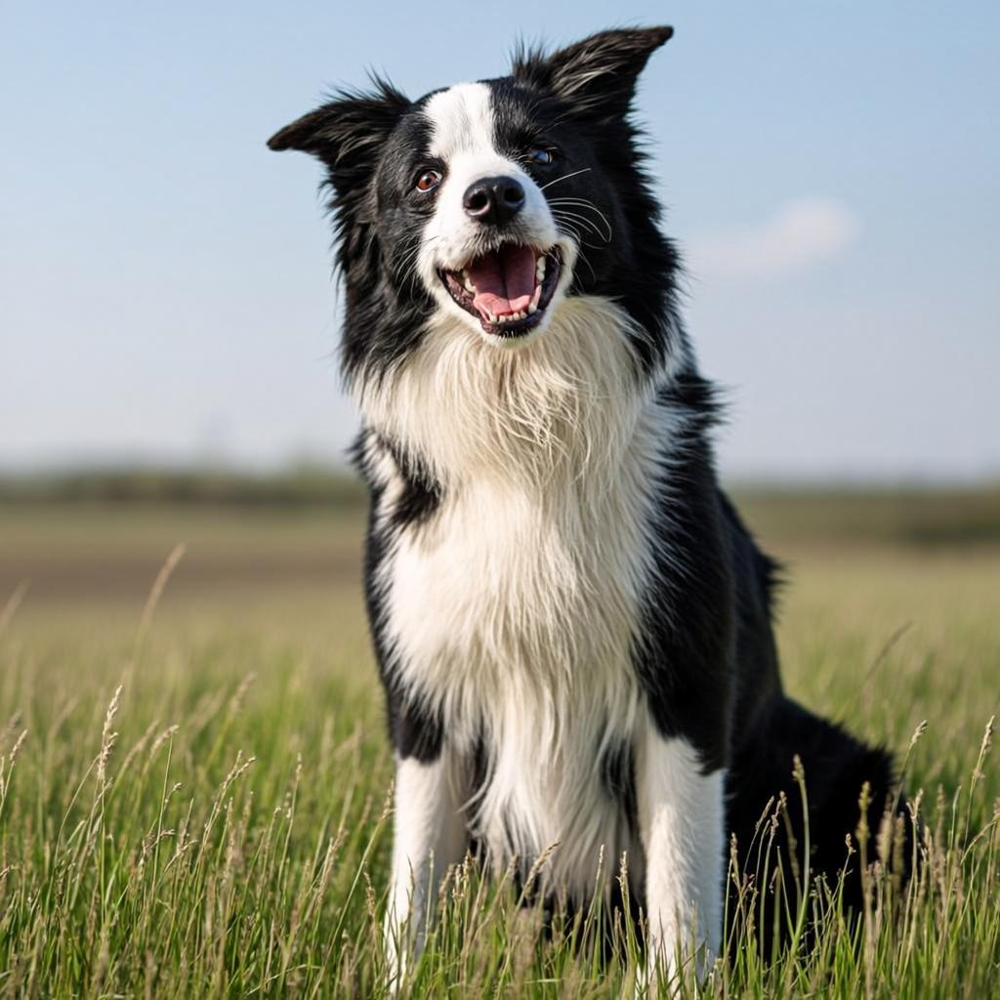

El equilibrio de tu perro empieza por respetar su naturaleza. Especialistas en pastoreo y rehabilitación conductual.
¿Tu perro muestra...?
Estos comportamientos enfocados de la manera adecuada tienen solución


Es una mente diseñada para trabajar, decidir y cooperar. La vida en entornos urbanos y el exceso de estímulos diarios no solo los desnaturaliza, sino que desestabiliza su equilibrio emocional.
El pastoreo es mucho más que ejercicio:
Programas especializados para el bienestar y desarrollo de tu perro
Para personas y perros que viven en ciudad y quieren descubrir su instinto natural de forma guiada y respetuosa.
Sesiones progresivas adaptadas a todas las edades, sin experiencia previa necesaria, enfocadas en el bienestar emocional.
Trabajo específico con ovejas para perros con ansiedad, bloqueo, obsesiones o desajustes conductuales.
Programa especializado para todas las razas. Gestiona y redirige los instintos naturales de manera positiva y efectiva.
El trabajo de pastoreo ofrece múltiples beneficios para el equilibrio de tu perro
Mejora la comunicación y conexión entre tú y tu perro
Permite expresar su naturaleza y propósito natural
Disminuye conductas desajustadas y el estrés acumulado
Aumenta concentración, autocontrol y salud mental
Llámame o escríbeme para más información. Estoy aquí para ayudarte a encontrar el equilibrio que tu perro necesita.